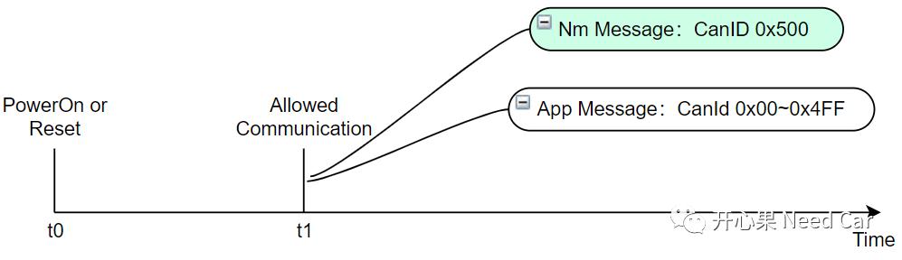
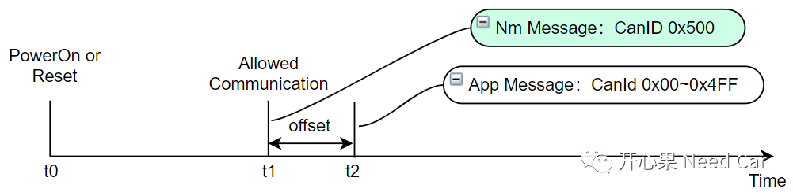
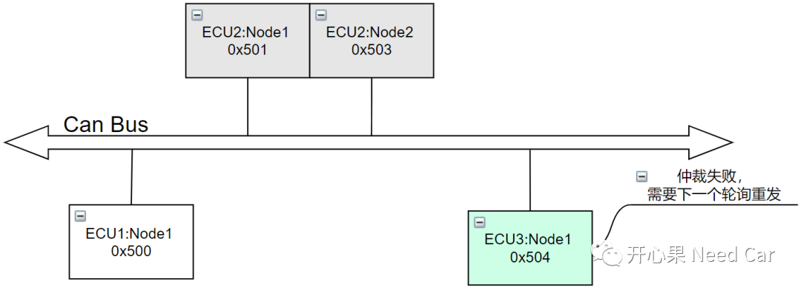
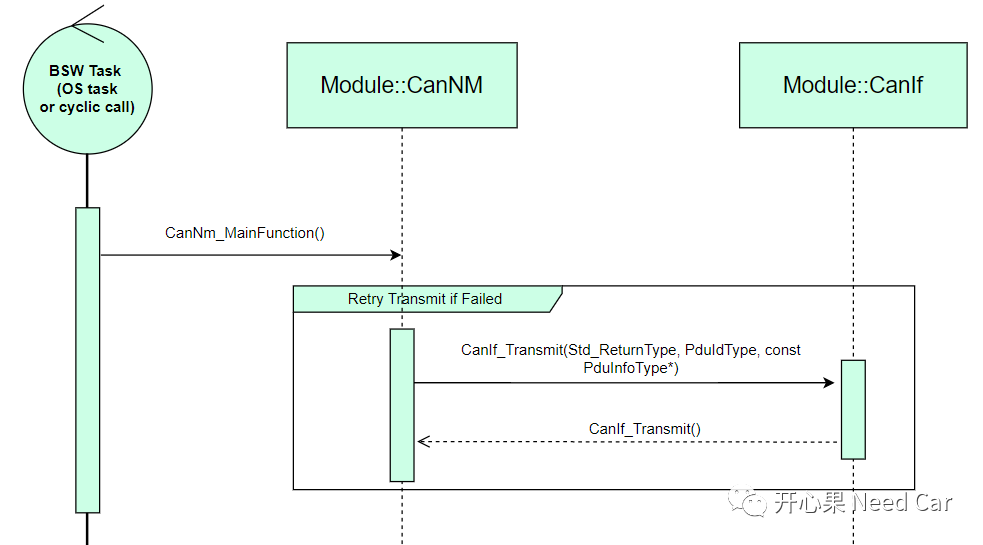

提示：基于Can总线讨论。
答：在回答这个问题之前，我们需要清楚：节点可以发送网络管理报文，说明此节点的网络类型不是Passive的，这个前文有说明，可以回顾Autosar网络管理：基础问题知多少。
首先，我们要清楚导致Node外发第一帧不是网络管理报文的原因，如下所示：

如上：假设应用报文所在区间0x00~0x4FF（一个节点一般包含多个应用报文），网络管理报文CanID所在区间：0x500~0x5FF，当前节点的网络管理报文CanID = 0x500。具体解释：当ECU被加电或者程序复位（t0时刻），完成初始化动作和准备工作，在t1时刻允许通信，此时如果应用报文和网络管理报文都请求发送，应用报文（这里主要指周期性应用报文）会被优先发送，因为应用报文的CanID优先级高于网络管理报文的CanID。
解决策略：既然应用报文的优先级高，那么在第一次周期性应用报文发送的时候，将其Offset一段时间，让网络管理报文在t1时刻发送，应用报文在t2时刻发送即可避免该问题的出现，具体需要配置哪些模块参数，可以参考前文：Autosar网络管理PN：路由超时大Bug，如下所示：

如上处理就万事大吉了吗？不一定，假设ECU3的网络管理报文CanID = 0x504，在其发送网络管理报文的时候，可能由于其网络管理报文CanID优先级低于其他节点网络管理报文的CanID，而导致其仲裁失败，如下所示：

当然，也可能由于其他某些工况导致当前周期的网络管理报文发送失败，所以，为了确保网络管理报文的发送成功，需要确保其在当前周期发送失败以后，在下一个轮询周期(Task)内，再次尝试网络管理报文的发送，如下所示：

提示：在CanNM模块，配置CanNmRetryFirstMessageRequest参数即可实现NM Msg的重发。注意，如果当前节点的网络类型是Passive的，CanNmRetryFirstMessageRequest参数配置无效。
AUTOSAR_SWS_CANNetworkManagement.pdf